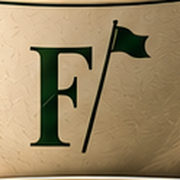

Why a Thistle?
our story
Of all the symbols Foreunder could have worn, whether a golf ball, crossed clubs or a steaming cup, we chose a thistle.
Because it tells a better story.
For centuries, the thistle has stood for Scotland: resilience, independence, pride, and a stubborn refusal to be pushed around.
Legend has it that an invading army crept barefoot toward a sleeping Scottish camp, trying to stay silent. One soldier stepped on a thistle, cried out, and woke the defenders.
History or folklore, the lesson has lasted: never underestimate something that looks harmless.
We like that.
Where the Game Grew Up
Golf grew up on the links of Scotland, and St Andrews became its spiritual home. It's a place where tradition matters and a walk across the Old Course connects generations of golfers.
The thistle carries that heritage quietly. It doesn't need a flagstick or a golf ball to tell you where its roots are. It is unmistakably Scottish, and for a coffee house inspired by an old Scottish clubhouse, that's the point.
The Colors
- Forest green for the links and the old clubs that play them.
- Antique gold for craftsmanship, and for the crema on a well-pulled espresso.
- Burgundy for the warmth of a good room and a long conversation.
It looks as right embroidered on a golf shirt as it does on a bag of fresh-roasted coffee.
The Name
Foreunder is four under par. A good round. A very good round, actually.
The kind of round you talk about for years, ideally over a good cup of coffee.
Why It Matters
Foreunder isn't trying to reinvent golf or coffee. It's about respecting the traditions behind both: the craft, the ritual, the patience, the occasional frustration, and the moment it all comes together.
Both reward attention to detail. Both start conversations. Both are better with good company.
The thistle is where the inspiration began.
The name is the round we're all chasing.
The coffee is why you're here.
Great Coffee. Better Grounds.
